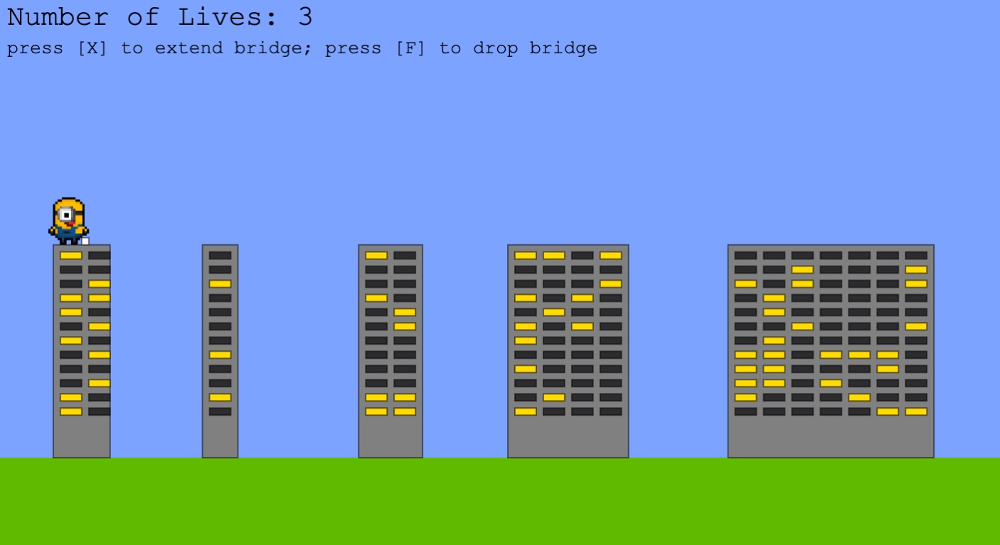

CONCEPT
The original concept of the game included a character and a board with the end goal being to reach the end of the screen without falling off any one of the buildings. The codebase was to be organized using Object Oriented Programming concepts and the controls were to be left simple. The height of the board would increase every time the player hit x, and once the player was satisfied with the length of the board, the player was to hit f for fall. If the board was too short, the character would fall before reaching the next building and if the board was too long, the character would walk off the next building and plummet to a certain death upon which the game would end.
MOTIVATION
Our motivation throughout the game included our shared love for the Minion movies and the many different forms of the running man game that we grew up playing. We wanted to provide a simple yet entertaining game to kill time with, and we feel that, given the time and resources available, we have done better than we first imagined. We wanted to go beyond the more traditional games and have fun with this project. Given more time, we would have liked to make the interface more aesthetically pleasing.
CONCLUSION
This ISP was the first project I did on such a scale, and I have learned far more from this experience than I could have predicted. Almost nothing went as predicted, with problems following my team and I through every step of the way, but many of these problems were resolved, leaving us with priceless bits of knowledge that we hope to apply to coming projects. Git and GitHub did not work for us as we were not well aware of how to properly work with it, and so we faced many issues whie pushing and pulling code. File handling was another challenge we had initially faced, but, luckily, it wasone that mostly sorted itself out over time. There are many things I would do differently, were I do redo this project now, and this code is not the finest piece of code I will write, but the learning oppurtunity was invaluable and a first for many more to come.
CODE SNIPPETS
func renderRectangle(canvas: Canvas, rect: Rect, color:Color){
let rectangle = Rectangle(rect: rect, fillMode: .fillAndStroke)
let fillRect = FillStyle(color:color)
canvas.render(fillRect, rectangle)
}
func renderWindows(canvas: Canvas, rect: Rect, columns: Int, rows: Int) {
var wind = rect
let spaceBt = wind.size.width + 10
for _ in 0 ..< rows {
for _ in 0 ..< columns {
let rand = Int.random(in: 1 ... 20)
if rand % 3 == 0 {
renderRectangle(canvas:canvas, rect:wind, color: Color(red:255, green: 214, blue:10))
wind.topLeft.x += spaceBt
}
else if rand % 3 != 0{
renderRectangle(canvas:canvas, rect:wind, color: Color(red:44, green: 44, blue:46))
wind.topLeft.x += spaceBt
}}
wind.topLeft.x -= spaceBt * columns
wind.topLeft.y += wind.size.height + 10
}}
The renderWindows function was used to render the windows for the buildings seen in the background and used the renderRectangle function above. For stylistic purposes, the function iterated through random integers such that the shadings on the windows varied from run to run and building to building.
func renderTower (canvas:Canvas, rect: Rect, towerCt: Int, color: Color, adds: [Int], widthAds: [Int]){
var tower = rect
var ind = 0
var winds = Rect(topLeft:Point(x:rect.topLeft.x+10, y:rect.topLeft.y+10), size:Size(width: 30, height: 10))
for _ in 0 ..< towerCt {
let add = adds[ind]
let widthAd = widthAds[ind]
ind = (ind+1)%adds.count
tower.size.width = widthAd // changing width of tower
renderRectangle(canvas:canvas, rect:tower, color:color)
let space = tower.size.width + add // changing distance between towers
renderWindows(canvas:canvas, rect:winds, columns: tower.size.width / 40, rows: tower.size.height / 25)
tower.topLeft.x += space
winds.topLeft.x += space
}}
The renderWindows and renderRectangle functions were both called within the renderTower function in which x number of towers were created given the distance in between and width of said towers and x. Given that the whole premise of MinionScapes is based on the distance in between and width of the towers, the idea was for such values to be pulled from random arrays but because the MinionScapes team was unable to call the same instance of randomized arrays from two files, the final (beta) product resulted in a lengthy array of set values. Should this project ever be revisited, the first goal would be to randomize the adds and widthAds arrays as seen in the function above.
func calculate(widthBetween: [Int], widthOf: [Int]) -> Bool {
let endRange = (widthOf[ind]/2) + widthBetween[ind] + widthOf[ind+1]
let startRange = (widthOf[ind]/2) + widthBetween[ind]
let newPosition = (widthOf[ind]/2) + widthBetween[ind] + (widthOf[ind+1]/2)
var tf = true
if board.rect.size.width > endRange { // ind is inden
board.rect.size.height = 10
board.rect.size.width = 10
tf = false
}
if board.rect.size.width < startRange {
board.rect.size.height = 10
board.rect.size.width = 10
tf = false
}
if board.rect.size.width <= endRange && board.rect.size.width >= startRange {
board.rect.topLeft.x += newPosition
board.rect.size.width = 10
board.rect.size.height = -10
ind += 1
// dude walks over
}
return tf
}}
The calculate function is in the Board class while the other functions above are in the Background class and because the widthOf and widthBetween parameters in the calculate function are based on the adds and widthAds arrays from the renderTowers function, the randomization of the width of and between the towers was unsuccessful. The calculate function above was called only after the user hit f after which the board fell to the next building and the minion walked across the buildings. Should the board reach but not reach over the next building, the minion would walk over; Otherwise, the minion would meet its end and so would the game.
func onKeyDown(key:String, code:String, ctrlKey:Bool, shiftKey:Bool, altKey:Bool, metaKey:Bool) {
let wides = [80, 50, 90, 170, 290, 50, 170, 100] //building width
let inBetween = [130, 170, 120, 140, 110, 90, 80] //area in between the buiildings
if key == "x" { //when key 'x' is pressed
board.extend(height: 10) // board extends up
}
if key == "f" {
board.fall() //board width and height switches 'falls'
if board.calculate(widthBetween:inBetween, widthOf: wides) == false { //whether it meets the buildings or not
lose.loseLife()
} else {
lose.winUp()
}
Buildindex += 1 //increase the index so it matches building inbetween & width
}
}
The InteractionLayer class managed interactions between the user and the game through the use of the onKeyDown handler. The most significant function in this class was the onKeyDown function in which the user was able to use certain keys to either extend the board or drop the board after which the results were calculated and either the win or lose function was called.
ISP 2022.